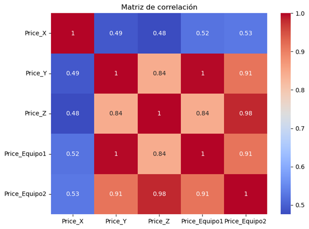
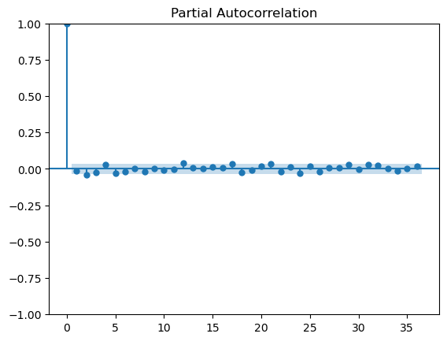
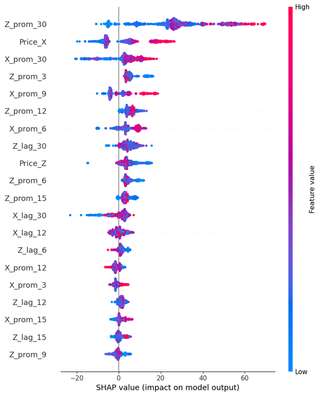
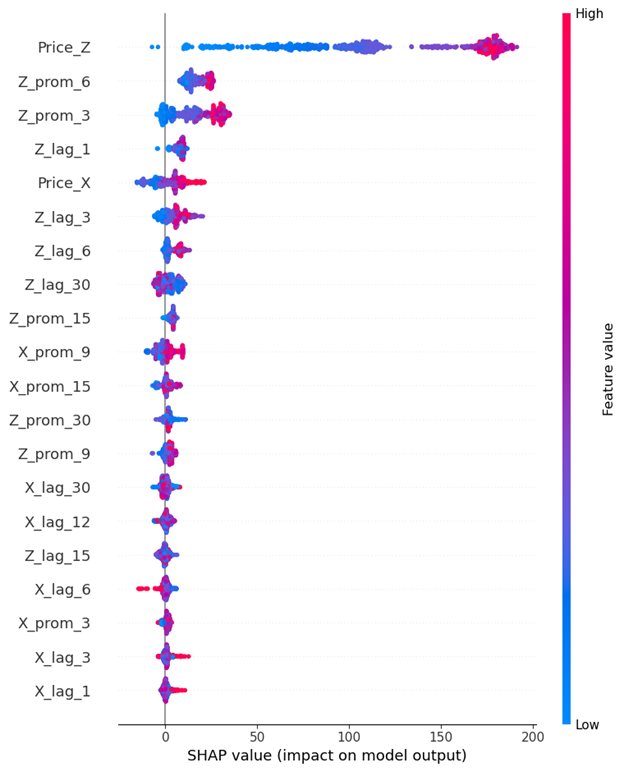
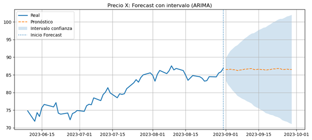
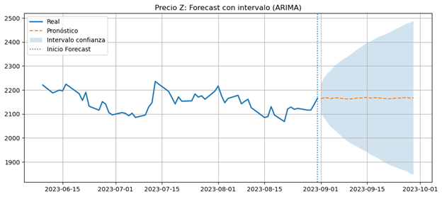
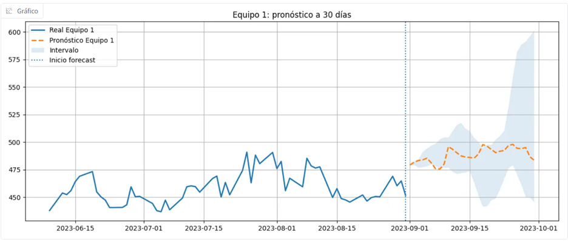
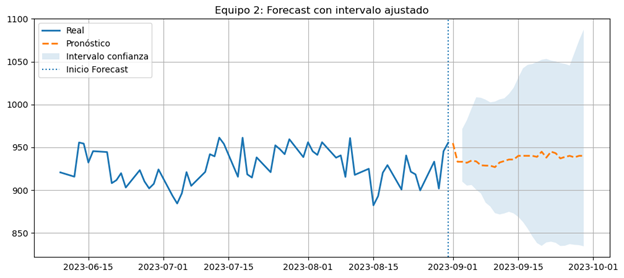

El modelo se entrenó con una configuración base razonable. Aplicar Grid Search o Bayesian Optimization mejoraría el desempeño, especialmente en el Equipo 1 donde el error es aún relativamente alto.
1. Explicación del Caso
El presente análisis surge de la necesidad de una empresa del sector constructor de anticipar con mayor precisión los costos de adquisición de dos tipos de equipos críticos —Price_Equipo1 y Price_Equipo2— durante la fase de ejecución de un proyecto. Históricamente, la variabilidad en el precio de estos equipos ha generado desviaciones presupuestales recurrentes que la organización no ha podido controlar de forma sistemática.
La gerencia planteaba la hipótesis de que dichos costos guardan relación con el comportamiento de ciertos insumos del mercado de materias primas. Para contrastar esta hipótesis y construir un mecanismo de pronóstico reproducible, el ejercicio facilita series históricas de tres variables explicativas: Price_X, Price_Y y Price_Z, junto con los registros históricos de los precios de cada equipo.
El problema presentó, desde el inicio, dos características metodológicas relevantes. La primera es la asimetría temporal entre variables: Price_X dispone de más períodos proyectados hacia el futuro que las demás series, lo cual condiciona la estrategia de modelado. La segunda es que el objetivo no se limita a describir el comportamiento histórico, sino que exige proyectar el costo esperado de los equipos con soporte estadístico y capacidad de interpretación para la toma de decisiones financieras.
Enfoque adoptado: problema híbrido que combina modelado de series de tiempo y aprendizaje automático. Primero se evalúa y proyecta la dinámica temporal de las materias primas relevantes y, con base en ese escenario futuro, se construye un modelo predictivo para los equipos.
2. Supuestos
Para desarrollar la solución de forma rigurosa se definieron los siguientes supuestos metodológicos y de negocio:
- Dependencia de los equipos respecto a las materias primas: existe una relación económica y estadística significativa entre el comportamiento de Price_X, Price_Y y Price_Z y los costos de adquisición de los equipos.
- Representatividad del histórico disponible: la información histórica se considera suficientemente representativa del sistema bajo estudio, con señal estadística útil para el entrenamiento de los modelos.
- No linealidad en las relaciones: la relación entre materias primas y costos de equipos no se supone estrictamente lineal, justificando el uso de modelos de ML.
- Estructura de serie de tiempo en Price_X y Price_Z: ambas variables presentan no estacionariedad y posible componente estacional, justificando modelado mediante SARIMA, validado con pruebas estadísticas formales.
- Price_Y como variable redundante: aunque Price_Y muestra correlación individual con los equipos, no aporta valor incremental frente a Price_Z en un modelo multivariado, introduciendo multicolinealidad.
- Incertidumbre creciente con el horizonte: la fiabilidad de los pronósticos disminuye conforme se amplía la ventana temporal. Los intervalos presentados son bandas razonables, no valores exactos.
- Estabilidad estructural del modelo: las relaciones identificadas en el período histórico se asumen vigentes en el horizonte de proyección, salvo cambios de mercado extraordinarios.
3. Metodología y Opción Tomada
Desde el punto de vista metodológico, el problema admite cuatro enfoques distintos:
Pipeline metodológico
La inspiración conceptual proviene de la arquitectura GAN: en estas redes, cada predicción alimenta la siguiente hasta converger. Se trasladó esa lógica al forecasting tabular:
1
Análisis exploratorio y correlaciones
Revisión de consistencia temporal, matriz de correlaciones e identificación de relaciones iniciales entre materias primas y equipos.
2
Regresión OLS y descarte de Price_Y
Regresión multivariada que revela multicolinealidad entre Price_Y y Price_Z. Price_Y se elimina del modelo final.
3
Prueba ADF y estacionariedad
Dickey-Fuller Aumentada confirma no estacionariedad. Diferenciación de primer orden estabiliza las series.
4
Modelado SARIMA(1,1,1)(1,1,1,12)
Proyección de Price_X y Price_Z a 30 días con intervalos de confianza upper/lower.
5
Feature engineering
Construcción de promedios móviles (ventanas 3, 6, 9, 12, 15, 30) y lags (1, 3, 6, 12, 15, 30 períodos) sobre las proyecciones.
6
XGBoost + SHAP
Entrenamiento de modelos independientes para Equipo 1 y Equipo 2. Interpretación mediante análisis SHAP de importancia de variables.
7
Escenarios mean / upper / lower
Propagación del error SARIMA hacia el modelo XGBoost para construir bandas de incertidumbre en el forecast final.
4. Resultados del Análisis
4.1 Análisis exploratorio y correlaciones
La matriz de correlación reveló que Price_Y y Price_Z presentan alta asociación lineal con Price_Equipo2 (0.91 y 0.98 respectivamente), mientras que Price_X muestra una relación más moderada (0.53). La alta correlación entre Price_Y y Price_Z (0.84) fue la primera señal de multicolinealidad entre ambas variables.

4.2 Regresión OLS y descarte de Price_Y
La estimación de una regresión OLS con las tres materias primas arrojó un R² de 0.992, pero con evidencia clara de solapamiento entre Price_Y y Price_Z. Al controlar por Price_Z, el aporte incremental de Price_Y desaparecía —señal directa de multicolinealidad (número de condición: 1.23×10⁴)—. La especificación reducida con Price_X y Price_Z mantuvo un R² de 0.971 con mayor estabilidad.
| Modelo | R² | Variables | Cond. No. |
|---|---|---|---|
| OLS completo | 0.992 | X, Y, Z | 1.23×10⁴ |
| OLS reducido | 0.971 | X, Z | 1.16×10⁴ |
4.3 Estacionariedad y SARIMA
La prueba ADF arrojó p-values de 0.428 (Price_X) y 0.205 (Price_Z) en niveles, confirmando no estacionariedad. Tras diferenciación de primer orden, los p-values cayeron a 0.000 y 2.7×10⁻²⁷ respectivamente. Los correlogramas ACF/PACF post-diferenciación no mostraron patrones relevantes, sugiriendo modelos de bajo orden. Se adoptó SARIMA(1,1,1)(1,1,1,12).

4.4 Desempeño del modelo SARIMA — Price_X
La validación del modelo SARIMA sobre los 30 días disponibles de Price_X (periodo posterior al histórico de equipos) arrojó:
7.95
MSE
2.84%
MAPE
Un MAPE inferior al 3% indica que la desviación porcentual promedio del pronóstico frente al valor observado es reducida. Esto valida el uso del forecast de Price_X como insumo confiable para el modelo final de equipos.
4.5 Modelo final XGBoost — Resultados
141.1
RMSE Equipo 1
17.85%
MAPE Equipo 1
117.3
RMSE Equipo 2
6.36%
MAPE Equipo 2
El modelo predice notablemente mejor el comportamiento de Price_Equipo2. Esto sugiere que la estructura causal entre materias primas y costo del Equipo 2 es más estable y captureable con las variables disponibles. El error más elevado en el Equipo 1 apunta a relaciones más complejas o factores adicionales no capturados en los datos.
4.6 Análisis SHAP
El análisis SHAP reveló que las variables de mayor contribución provienen de las transformaciones temporales —especialmente promedios móviles y lags de ventanas amplias— más que de los valores puntuales contemporáneos. Este hallazgo es coherente con la lógica de negocio: el precio de los equipos refleja tendencias acumuladas, no solo fluctuaciones instantáneas.


Validación SHAP: al reentrenar con solo las variables top SHAP, el RMSE del Equipo 2 empeoró de 117.3 a 308.4 (+163%). Esto confirma que SHAP es valioso para interpretación, pero no para reducción de variables en este contexto.
| Métrica | Modelo completo | Solo top SHAP |
|---|---|---|
| RMSE Equipo 1 | 141.11 | 194.64 |
| MAPE Equipo 1 | 17.85% | 24.64% |
| RMSE Equipo 2 | 117.30 | 308.39 |
| MAPE Equipo 2 | 6.36% | 22.52% |
5. Proyección de Costos y Horizonte
5.1 Horizonte de proyección
El horizonte principal trabajado fue de 30 días, seleccionado por tres razones complementarias: ofrece utilidad práctica para la planificación de corto plazo, minimiza el efecto acumulado de la incertidumbre en la cadena de pronósticos, y es consistente con la disponibilidad de datos proyectados de Price_X.
| Horizonte | Uso recomendado |
|---|---|
| 30 días | Decisiones operativas de corto plazo. Alta confiabilidad. |
| 60 días | Planeación táctica. Confiabilidad moderada; usar con precaución. |
| 90 días o más | Escenarios estratégicos. Baja precisión esperada; orientativo. |
5.2 Proyección de materias primas


5.3 Escenarios de proyección de equipos
Para trasladar adecuadamente la incertidumbre al usuario final se construyeron tres escenarios propagando el error SARIMA hacia el modelo XGBoost:
- Escenario mean (central): pronóstico esperado bajo condiciones promedio. Referencia para la planeación presupuestal.
- Escenario lower (favorable): trayectoria de insumos más baja de lo esperado. Mejor caso razonable para gestión de costos.
- Escenario upper (adverso): trayectoria más alta o más volátil. Peor caso razonable para reservas de contingencia.


6. Futuros Ajustes o Mejoras
Aunque la solución es funcional y estadísticamente sólida, existen varias líneas de mejora para un entorno productivo:
⚙️
Optimización de hiperparámetros de XGBoost
📐
Selección formal de órdenes SARIMA
La especificación (1,1,1)(1,1,1,12) fue adoptada como punto de partida robusto. Podría compararse con otras especificaciones mediante criterios AIC/BIC o auto_arima.
🔄
Reentrenamiento periódico
Dada la naturaleza de las series de precios de mercado, es fundamental establecer un esquema de reentrenamiento regular para adaptar el modelo a nuevas dinámicas.
🌐
Integración con fuentes externas de mercado
El agente conversacional ya contempla incorporar noticias y variables macroeconómicas. A futuro, este mecanismo debería enriquecerse con fuentes alineadas temporalmente con el forecast.
📡
Monitoreo de drift estadístico
Implementar alertas automáticas que detecten desviaciones significativas en las distribuciones de variables explicativas o en el error predictivo del modelo.
🚀
Despliegue productivo bajo esquema MLOps
La arquitectura cloud propuesta sienta las bases. El siguiente paso sería automatizar el ciclo completo de entrenamiento, validación, despliegue y monitoreo con trazabilidad completa.
Arquitectura Cloud Propuesta (AWS)
🔧 Desarrollo y CI/CD
- GitHub Repository
- GitHub Actions
- Amazon ECR
📥 Ingesta de Datos
- S3 Raw Data
- AWS Glue / Lambda
- S3 Processed
🤖 MLOps
- SageMaker Training
- Model Registry
- SageMaker Endpoint
🌐 Exposición
- ECS Fargate
- App Runner
- Gradio / Web UI
🔒 Transversales
- Secrets Manager
- CloudWatch Logs
- CloudWatch Monitoring
7. Apreciaciones y Comentarios del Caso
Este caso resulta particularmente interesante desde el punto de vista metodológico porque no se reduce a construir un forecast aislado, sino que obliga a pensar de forma integral: identificar qué variables realmente explican el comportamiento del costo, proyectarlas de manera coherente hacia el futuro y traducir esa información en una estimación accionable para la toma de decisiones financieras.
Durante el desarrollo del análisis consideré seriamente la posibilidad de implementar redes neuronales profundas, redes convolucionales sobre ventanas temporales o incluso GANs adaptadas a series de tiempo. Técnicamente habría sido viable; las GANs pueden reformularse para generar distribuciones de trayectorias futuras en lugar de imágenes, y los modelos recurrentes tienen capacidad demostrada para capturar dependencias temporales complejas. Sin embargo, opté por no ir en esa dirección: el volumen de datos disponible no justificaba esa complejidad, el riesgo de sobreajuste era alto y la interpretabilidad del modelo —un requisito implícito en cualquier entregable de consultoría— se habría visto comprometida.
Lo que sí tomé de las GANs fue su principio estructural: la idea de que una predicción encadenada, donde la salida de un modelo alimenta la entrada del siguiente, puede producir resultados más robustos que un modelo único entrenado de punta a punta. Esa lógica articula todo el pipeline.
En eso radica, a mi juicio, la mayor dificultad del ejercicio: no en la implementación técnica, sino en la elección metodológica. Las soluciones más sofisticadas no siempre son las más eficaces, y saber cuándo una arquitectura simple y bien fundamentada supera a un modelo complejo mal calibrado es una decisión que requiere criterio, no solo conocimiento técnico.
Otro aspecto que enriquece el caso es la dimensión de despliegue: no solo se construyeron modelos, sino que se pensó en cómo exponer los resultados a través de un agente conversacional, lo cual acerca el ejercicio a una solución de negocio real con usuario final. Esa perspectiva —del modelo como componente de un sistema mayor, y no como fin en sí mismo— es precisamente la que distingue un análisis técnico de una propuesta de valor sostenible en el tiempo.
En conclusión, la opción metodológica seleccionada logra un balance adecuado entre rigor estadístico, capacidad predictiva, interpretabilidad de los resultados y escalabilidad futura. A veces las soluciones más sencillas son las más eficaces, y en este caso la evidencia así lo confirmó.